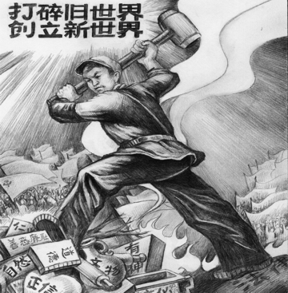

Cửu Bình 4: Đảng cộng sản, một lực lượng phản vũ trụ (audio)
Tài liệu gốc: http://dajiyuan.com/gb/4/11/25/n727814.htm
0 – Dẫn nhập
1 – Đảng cộng sản là gì?
2 – Đảng cộng sản Trung Quốc xuất sinh như thế nào?
3 – Chính quyền bạo lực của Đảng cộng sản Trung Quốc.
4 – Đảng cộng sản, một lực lượng phản vũ trụ.
5 – Giang Trạch Dân và Đảng cộng sản Trung Quốc lợi dụng lẫn nhau để đàn áp Pháp Luân Công.
6 – Đảng cộng sản Trung Quốc phá hoại văn hoá dân tộc.
7 – Lịch sử giết chóc của Đảng cộng sản Trung Quốc.
8 – Bản chất tà giáo của Đảng cộng sản Trung Quốc.
9 – Bản tính lưu manh của Đảng cộng sản Trung Quốc.
Lời mở đầu
|
 |
Người Trung Quốc rất trọng Đạo. Thời xưa một hoàng đế hung bạo sẽ bị gọi là tên hôn quân vô đạo. Một hành vi không phù hợp với tiêu chuẩn đạo đức thì bị coi là không còn đạo lý. Cả khi các nông dân nổi dậy, họ cũng giương cao khẩu hiệu là họ thế thiên hành Đạo. Lão Tử [1] nói, “Có một cái gì đó huyền bí và nguyên vẹn tồn tại trước lúc khai thiên lập địa. Tĩnh mịch, vô hình, trọn vẹn và bất biến. Nó sống mãi ở khắp mọi nơi trong hoàn thiện, và từ nó mọi vật được sinh ra. Tôi không biết tên nó là gì. Tôi gọi nó là Đạo.” Điều đó có ý nói rằng thế giới được hình thành từ “Đạo”.
Trong một trăm năm qua, sự xâm lăng bất ngờ của bóng ma tà linh cộng sản đã tạo ra một thế lực phản lại tự nhiên và nhân loại, gây ra những nỗi thống khổ và bi kịch vô bờ bến. Nó cũng đã đẩy nền văn minh của nhân loại đến bên bờ hủy diệt. Sau khi đã làm đủ mọi thứ bạo tàn vô Đạo phản thiên nghịch địa, nó đã trở thành một thế lực cực kỳ tà ác phản lại tự nhiên và vũ trụ.
”Người thuận Đất, Đất thuận Trời, Trời thuận Đạo, và Đạo thuận theo tự nhiên.” [2] Ở Trung Quốc thời xưa, người ta tin vào việc tuân theo, hòa hợp và đồng tồn tại với trời. Nhân loại sống hòa hợp với trời đất và tồn tại trong sự phụ thuộc tương hỗ với trời đất. Đạo lý của vũ trụ là bất biến. Vũ trụ xoay chuyển thuận theo Đạo một cách có trật tự. Đất thuận theo những biến đổi của trời, vì vậy nó có bốn mùa khác nhau. Sống thuận theo trời đất, nhân loại sẽ được hưởng một cuộc sống hài hòa trong ân phúc. Điều này được phản ánh trong câu nói thiên thời, địa lợi, nhân hòa [3]. Người Trung Quốc nghĩ rằng, tất cả mọi thứ từ thiên văn, địa lý, hệ thống lịch theo dõi ngày tháng, y học, văn học, và cả những cấu trúc xã hội đều tuân theo quy luật này.
Nhưng Đảng Cộng sản tuyên truyền “nhân định thắng thiên” và “triết học đấu tranh” ngang nhiên thách thức trời đất và tự nhiên. Mao Trạch Đông nói, “đấu trời là niềm vui vô tận, đấu đất là niềm vui vô tận, và đấu người là niềm vui vô tận”. Có lẽ Đảng Cộng sản đã có được những niềm vui thật sự từ những cuộc đấu tranh này, nhưng nhân dân đã phải trả những cái giá cực kỳ đau đớn.
******************
I. Đấu tranh với nhân dân và hủy diệt nhân tính
Làm lẫn lộn tốt xấu và hủy diệt nhân tính
Một con người trước hết là một thực thể của tự nhiên, và sau đó mới là một thực thể của xã hội. “Nhân tri sơ tính bản thiện” [4] và “Ai cũng có lòng từ thiện” [5] là những đường lối chỉ đạo mà con người ta sẵn có khi sinh ra, những đường lối chỉ đạo cho phép con người ta phân biệt đúng sai, và tốt xấu. Tuy nhiên, đối với Đảng cộng sản Trung Quốc (ĐCSTQ), con người giống như con thú hoặc thậm chí như những cỗ máy. Theo ĐCSTQ, giai cấp tư sản và giai cấp vô sản chỉ là những lực lượng vật chất.
Mục đích của ĐCSTQ là kiểm soát nhân dân và dần dần biến họ thành những tên côn đồ bạo loạn cách mạng. Mác nói, “Chỉ có lực lượng vật chất mới có thể lật đổ các lực lượng vật chất”; “Lý luận cũng có thể trở thành một lực lượng vật chất sau khi nó thu hút được quần chúng” [6]. Ông ta tin rằng toàn bộ lịch sử nhân loại không gì khác hơn là sự phát triển liên tục của nhân tính và rằng nhân tính trên thực tế là tính giai cấp, và cho rằng không có gì là bẩm sinh và vốn có mà tất cả đều là sản phẩm của môi trường. Ông ta lý luận rằng con người là một “tổng hoà các quan hệ xã hội”, bất đồng với khái niệm “con người tự nhiên” mà Phơ-bách thừa nhận. Lê-nin tin rằng chủ nghĩa Mác-xít không thể được phát sinh một cách tự nhiên trong giai cấp vô sản, mà phải được đưa vào từ bên ngoài. Lê-nin đã cố gắng hết sức nhưng vẫn không thể làm cho công nhân chuyển từ đấu tranh kinh tế sang đấu tranh chính trị để giành quyền lực. Do đó ông ta đặt hy vọng của mình vào thuyết phản xạ có điều kiện của I-van Pê-tơ-rô-vích Páp-lốp, người đã từng đoạt giải Nô-ben. Lê-nin nói rằng lý thuyết này “có ý nghĩa quan trọng đối với giai cấp vô sản trên toàn thế giới.” Tơ-roi-xky [7] còn hy vọng hão huyền rằng thuyết phản xạ có điều kiện sẽ không chỉ thay đổi con người về mặt tâm lý, mà còn thay đổi con người cả về mặt thể chất. Cũng như cách một con chó chảy nước miếng mỗi khi nó nghe thấy tiếng chuông reo báo hiệu bữa ăn trưa, ông ta hy vọng rằng những người lính khi nghe thấy tiếng súng nổ cũng sẽ dũng cảm xông lên và hiến dâng cuộc sống của mình cho Đảng Cộng sản.
Từ thời cổ, con người ta đã tin rằng thành quả có được là do nỗ lực và lao động. Bằng cách lao động chăm chỉ người ta có được một cuộc sống sung túc. Mọi người coi khinh sự lười biếng và cho rằng thu lợi không bằng con đường lao động là vô đạo đức. Nhưng sau khi Đảng Cộng sản lan đến Trung Quốc như một bệnh dịch, nó khuyến khích những kẻ cặn bã và lười nhác của xã hội đi chia đất, cướp tài sản riêng, và tàn bạo áp bức mọi người: tất cả đều được thực hiện công khai dưới danh nghĩa pháp luật.
Mọi người đều biết kính trọng người già và chăm sóc trẻ em là điều tốt; không kính trọng người già và thầy giáo là xấu. Nền giáo dục cổ xưa theo Khổng Tử có hai phần: tiểu học và đại học. Tiểu học được dạy cho trẻ em dưới 15 tuổi và chủ yếu tập trung vào các quy tắc hành xử về vệ sinh, giao tiếp xã hội, và nghi thức (có nghĩa là giáo dục vệ sinh, ứng xử xã hội, cách ăn nói, v.v…). Giáo dục đại học nhấn mạnh về đức và Đạo [8]. Bằng những chiến dịch chỉ trích Lâm Bưu [9], phê phán Khổng Tử và phỉ nhổ lòng kính trọng đối với các giáo viên, ĐCSTQ đã xóa bỏ tất cả các chuẩn mực đạo đức khỏi tâm trí của thế hệ trẻ.
Người xưa nói rằng, ‘Một ngày là thầy, trọn đời là cha’.
Ngày 5 tháng 8 năm 1966, Biện Trọng Vân, một cô giáo của Trường Trung học Nữ thuộc Đại học Sư phạm Bắc Kinh, bị các nữ sinh của mình bắt diễu đi trên phố, đội một chiếc mũ lừa cao làm bằng giấy (chuyên dành để đội vào đầu những học sinh học dốt – người dịch), mặc quần áo vấy đầy mực đen, quàng một chiếc bảng đen sỉ nhục qua cổ, đi giữa đám học sinh mang những thùng rác làm trống để vỗ. Cô bị bắt phải quỳ trên mặt đất và bị đánh bằng một cái gậy gỗ có đóng đinh lởm chởm và bị đổ nước sôi lên người. Cô giáo đó đã bị tra tấn đến chết.
Một nữ hiệu trưởng trường Trung học thuộc Đại học Bắc Kinh bị học sinh bắt phải gõ lên một chiếc chậu rửa đã vỡ và kêu la “Tôi là một phần tử xấu”. Bà bị làm nhục bằng cách cắt tóc lởm chởm. Bà bị đánh vào đầu cho đến khi máu phun ra trong khi bị bắt phải quỳ xuống và bò trên mặt đất.
Ai cũng nghĩ sạch là tốt, bẩn là xấu. Nhưng ĐCSTQ lại tuyên dương ‘phủ bùn khắp người và làm chai đầy tay’. Đảng nghĩ rằng mọi người là tốt khi “tay lem luốc và chân dính phân bò” [10]. Những người như vậy được coi là có tinh thần cách mạng cao nhất, và có thể học đại học, được kết nạp Đảng, được thăng chức và cuối cùng sẽ trở thành những người lãnh đạo Đảng.
Nhân loại tiến bộ được là nhờ tích lũy kiến thức, nhưng, dưới chế độ Cộng sản, đạt được kiến thức lại bị coi là xấu. Những người trí thức bị xếp vào loại hôi thối thứ chín — tệ nhất trên bậc thang từ một đến chín. Đảng bảo những người trí thức phải học hỏi những người mù chữ, và cần phải bị giáo dục lại bởi những người nông dân nghèo để được cải tạo và bắt đầu một cuộc sống mới. Trong việc tái giáo dục những người trí thức, các giáo sư của trường Đại học Thanh Hoa, một trường đại học danh tiếng của Trung Quốc, bị đi đày đến Đảo Như Châu ở Nam Xương, tỉnh Giang Tây. Bệnh sán máng [11] là một bệnh rất phổ biến ở khu vực này, và thậm chí một trại lao động cải tạo trước kia ở đây cũng đã phải rời đi nơi khác. Ngay sau khi tiếp xúc với nước sông, những vị giáo sư này đã bị nhiễm sán và bị sơ gan, và bị mất khả năng sống và làm việc.
Dưới sự xúi giục của Thủ tướng Trung Quốc Chu Ân Lai thời bấy giờ, Đảng Cộng sản Cam-pu-chia (Khơ-me Đỏ) đã tiến hành một cuộc đàn áp dã man nhất nhằm vào các nhà trí thức. Những người có tư tưởng độc lập đã trở thành những đối tượng bị cải tạo và hủy diệt cả về tinh thần lẫn thể xác. Từ năm 1975 đến năm 1978, một phần tư dân số của Cam-pu-chia đã bị giết chết. Có một số người đã bị giết chết chỉ bởi vì trên mặt họ có dấu vết của việc đeo kính mắt.
Sau chiến thắng của Đảng Cộng sản Cam-pu-chia năm 1975, Pôn-pốt đã vội vã bắt đầu thiết lập chủ nghĩa xã hội — một thiên đường trong xã hội loài người — không có khác biệt giai cấp, không có cách biệt giữa thành thị và nông thôn, không có tiền tệ và thương mại. Cuối cùng thì, các gia đình đã bị xé nát và thay thế bằng các đội lao động nam và các đội lao động nữ. Tất cả đều phải làm việc và ăn chung, và mặc các bộ quần áo đồng phục cách mạng màu đen hoặc quần áo bộ đội. Các cặp vợ chồng chỉ được gặp nhau một tuần một lần khi được duyệt.
Đảng Cộng sản tuyên bố không sợ trời đất và ngạo mạn nỗ lực cải tạo trời đất. Đây là một thái độ hoàn toàn coi thường đối với tất cả các nhân tố và lực lượng chân chính trong vũ trụ. Mao trạch Đông viết trong khi còn là sinh viên ở Hồ Nam:
“Trong tất cả các thế kỷ, tất cả các quốc gia đều đã thực hiện những cuộc cách mạng vĩ đại. Những cái cũ bị rửa trôi đi và mọi thứ được nhuộm mới; những biến đổi to lớn đã diễn ra, kéo theo sự sống chết, thành bại. Sự hủy diệt của vũ trụ cũng như vậy. Sự hủy diệt rõ ràng sẽ không phải là sự hủy diệt cuối cùng, và không nghi ngờ gì là sự hủy diệt ở chỗ này sẽ là sự sinh thành ở chỗ khác. Tất cả chúng ta đều lường trước được sự hủy diệt đó, bởi vì trong việc hủy diệt vũ trụ cũ chúng ta sẽ tạo ra vũ trụ mới. Chẳng phải nó sẽ tốt hơn vũ trụ cũ hay sao?!”
Yêu mến là một tình cảm tự nhiên của con người. Tình cảm vợ chồng, con cái, cha mẹ, bạn bè và trong xã hội nói chung là bình thường. Qua những chiến dịch chính trị liên miên không ngừng nghỉ, ĐCSTQ đã biến người thành sói, hoặc thậm chí thành một con vật hung dữ hơn cả sói. Ngay cả hổ dữ cũng không ăn thịt con, nhưng dưới sự cai trị của ĐCSTQ, cha mẹ con cái vợ chồng tố cáo lẫn nhau là điều bình thường, các mối quan hệ gia đình thường bị chối bỏ.
Trong một trường tiểu học ở Bắc kinh vào giữa những năm 1960, một cô giáo vô tình viết hai chữ ‘xã hội chủ nghĩa’ và ‘sụp đổ’ bên cạnh nhau khi cô đang hướng dẫn các học sinh tập viết chữ Hán. Học sinh đã tố cáo cô. Sau đó, cô bị phê phán hàng ngày và bị các học sinh nam tát. Con gái của cô cũng cắt đứt quan hệ với cô. Bất cứ khi nào mà cuộc đấu tranh trở nên gay gắt hơn, con gái cô lại phê phán “phong trào mới trong các cuộc đấu tranh giai cấp” của mẹ mình trong các buổi sinh hoạt chính trị. Vài năm sau sự kiện đó, công việc duy nhất của cô là hàng ngày quét dọn trường bao gồm cả quét dọn các nhà vệ sinh công cộng của trường.
Những ai đã từng trải qua cuộc Cách mạng Văn hóa sẽ không bao giờ quên cô Trương Chí Tân, người đã bị bỏ tù vì đã phê phán Mao Trạch Đông vì sự thất bại của ông ta trong chiến dịch đại nhảy vọt. Cai ngục đã nhiều lần cởi hết quần áo của cô, còng tay cô ra đằng sau lưng và quẳng cô vào xà-lim nam để cho các tù nhân nam hãm hiếp tập thể cô. Cuối cùng cô trở nên bị điên loạn. Khi bị tử hình, cai ngục sợ rằng cô sẽ hô khẩu hiệu phản đối nên đã ấn đầu cô lên một cục gạch và cắt hở cuống họng của cô mà không hề gây tê.
Trong cuộc đàn áp Pháp Luân Công trong những năm gần đây, ĐCSTQ vẫn tiếp tục sử dụng những thủ đoạn cũ đó để kích động sự hằn thù và xúi giục bạo lực.
Đảng Cộng sản đã tiêu diệt bản tính lương thiện của con người, và quảng bá, khuyến khích và sử dụng mặt ác của nhân tính để củng cố quyền lực thống trị của nó. Hết chiến dịch này đến chiến dịch khác, những người có lương tâm đã bị buộc phải im lặng vì sợ bạo lực. Đảng Cộng sản đã hủy diệt một cách có hệ thống các chuẩn mực đạo đức phổ biến để hoàn toàn phá hủy các khái niệm thiện ác và vinh nhục đã được nhân loại duy trì qua hàng nghìn năm nay.
Tà ác đã vượt quá quy luật tương sinh tương khắc
Lão Tử nói: “Toàn thiên hạ có thể thấy cái đẹp là đẹp là bởi vì có sự hiện hữu của cái xấu, có thể biết cái thiện là thiện là bởi vì có sự hiện hữu của cái ác. Do đó hữu và vô cùng phát sinh, khó và dễ bù nhau, dài và ngắn trái ngược nhau, cao và thấp dựa vào nhau, tiếng nói và âm thanh hòa hợp cùng nhau, trước và sau đi theo nhau.” [12]
Nói một cách đơn giản, có tồn tại quy luật tương sinh tương khắc ở nhân gian. Không chỉ loài người được chia thành người tốt và người xấu, mà thiện và ác cũng đồng thời tồn tại trong cùng một con người.
Đạo Chích, một nhân vật điển hình của bọn cướp ở Trung Quốc thời xưa, nói với đám lâu la, “Ăn cướp cũng phải có Đạo.” Y tiếp tục diễn thuyết rằng một tên cướp cũng phải có thánh-dũng-nghĩa-trí-nhân. Đó có nghĩa là thậm chí một tên cướp cũng không thể muốn gì liền làm nấy mà cũng phải tuân thủ một số khuôn phép nhất định.
Nhìn lại lịch sử của ĐCSTQ, chúng ta có thể nói rằng nó đầy những thủ đoạn xảo trá và bội phản không còn kiêng nể gì nữa. Ví dụ, điều mà bọn cướp tôn trọng nhất là “nghĩa”. Cả nơi mà chúng chia nhau những gì cướp được cũng được gọi là “sảnh chia đồ tụ nghĩa”. Nhưng giữa các đồng chí trong ĐCSTQ, mỗi khi có một cuộc khủng hoảng xuất hiện, thì họ tố cáo và buộc tội lẫn nhau, và thậm chí bịa đặt ra những tội danh giả mạo để hại nhau, sát thêm muối vào vết thương.
Lấy viên tướng Bành Đức Hoài làm ví dụ. Mao Trạch Đông, xuất thân từ một gia đình nông dân, tất nhiên biết thừa rằng không thể nào sản xuất ra 130.000 cân gạo trên một mẫu đất [13] và những điều mà Bành nói đều là đúng. Ông ta cũng biết rõ rằng Bành không có ý định cướp quyền lực của ông ta, chưa kể đến việc Bành đã cứu mạng ông ta nhiều lần khi Bành chỉ có 20.000 quân đã khổ chiến với 200.000 lính của Hồ Tông Nam trong cuộc nội chiến giữa Đảng Cộng sản và Quốc Dân Đảng. Vậy mà khi Bành vừa phát biểu sự bất đồng ý kiến của mình với Mao, Mao ngay lập tức nổi giận, ném ngay bài thơ mà ông ta viết để ca ngợi Bành vào thùng rác —“Ai dám cưỡi ngựa tiến lên và rút kiếm ra; Chỉ có tướng Bành của chúng ta!”— Mao đã kiên quyết hại chết Bành, không còn đếm xỉa gì đến sự cao thượng và tình đồng chí ân nhân cứu mạng của Bành đối với mình.
ĐCSTQ giết chóc tàn ác thay vì cai trị với lòng từ tâm; nó đàn áp cả các đảng viên của chính nó bất chấp cả tình đồng chí và trung thành cá nhân; nó nhượng bộ lãnh thổ của Trung Quốc, hành động hèn nhát; nó tự biến mình thành kẻ thù của chính tín, thiếu trí tuệ; nó phát động những phong trào quần chúng, chà đạp lên đường lối của các bậc thánh nhân trong việc trị nước. Tóm lại, ĐCSTQ đã đi quá xa khi từ bỏ cả chuẩn mực đạo đức tối thiểu là “Ăn cướp cũng phải có Đạo.” Sự tà ác của nó đã vượt quá cả quy luật tương sinh tương khắc trong vũ trụ. ĐCSTQ hoàn toàn chống lại tự nhiên và nhân loại vì mục đích đảo lộn các tiêu chuẩn của thiện và ác và làm loạn các quy luật của vũ trụ. Sự ngạo mạn vô độ của nó đã tới đỉnh điểm, và nó sẽ phải đi đến một sự sụp đổ hoàn toàn.
******************
II. Đấu Đất vi phạm quy luật tự nhiên, gây nên tai họa bất tận
Mở rộng đấu tranh giai cấp đến thiên nhiên
Kim Huấn Hoa, một học sinh tốt nghiệp trung học năm 1968 của trường Trung học Ngô Tùng số 2 của Thượng Hải và là một thành viên của Ủy ban thường trực Hồng Vệ binh Trung học ở Thượng Hải, được đưa đến vùng nông thôn của tỉnh Hắc Long Giang vào tháng 3 năm 1969. Ngày 15 tháng 8, 1969, những cơn lũ dữ dội đã đổ xuống từ trên núi và nhanh chóng làm ngập những khu vực ở xung quanh sông Song Hà. Kim nhảy vào dòng nước chảy xiết để kéo lên hai cột dây điện đang bị cuốn trôi đi cho đội sản xuất của anh ta và đã bị chết đuối.
Sau đây là hai đoạn nhật ký [14] của Kim viết trước khi chết.
Ngày 4 tháng Bảy:
Tôi đang bắt đầu cảm thấy tính nghiêm trọng và ác liệt của cuộc đấu tranh giai cấp ở nông thôn. Là một hồng vệ binh của Mao Chủ tịch, tôi đã hoàn toàn sẵn sàng chiến đấu đối đầu với những thế lực phản động với tư tưởng bất khả chiến bại của Mao Trạch Đông làm vũ khí của mình. Tôi sẵn lòng làm điều đó thậm chí nếu điều đó có nghĩa là tôi phải hy sinh mạng sống của mình. Tôi sẽ chiến đấu, chiến đấu, và chiến đấu với tất cả khả năng của mình để củng cố chế độ chuyên chính vô sản.
Ngày 19 tháng Bảy:
Những kẻ thù giai cấp trong đội sản xuất đó vẫn còn kiêu ngạo. Những thanh niên trí thức đến nông thôn chính là để tham gia vào ba phong trào cách mạng lớn ở nông thôn. Quan trọng nhất là cuộc đấu tranh giai cấp. Chúng tôi phải nương tựa vào giai cấp nông dân nghèo và dưới trung nông, vận động quần chúng và tiêu diệt tính kiêu ngạo của kẻ thù. Chúng tôi, những thanh niên trí thức phải luôn luôn giương cao khẩu hiệu vĩ đại của Tư tưởng Mao Trạch Đông, không bao giờ quên đấu tranh giai cấp, và không bao giờ quên chuyên chính vô sản.
Kim đến nông thôn với tư tưởng đấu trời đấu đất và cải tạo nhân loại. Quyển nhật ký của anh ta cho thấy rằng đầu óc của anh ta đầy những tư tưởng “chiến đấu”. Anh ta đã mở rộng ý tưởng “đấu tranh với con người” ra đấu trời đấu đất, và cuối cùng thì đã mất mạng vì điều đó. Kim là một trường hợp điển hình của triết học đấu tranh và, đồng thời, không còn nghi ngờ gì nữa đã trở thành nạn nhân của nó.
Ăng-ghen đã từng nói rằng: “tự do là sự thừa nhận những điều tất nhiên”. Mao Trạch Đông tiếp theo thêm vào, “và là sự cải tạo thế giới.” Đoạn cuối này đã hoàn toàn đưa ra ánh sáng quan điểm của ĐCSTQ về thiên nhiên, tức là, thay đổi thiên nhiên. Đối với những người theo chủ nghĩa cộng sản, cái “tất nhiên” là điều ở ngoài tầm nhìn của họ, là những “quy luật” mà họ không cách nào hiểu nổi. Họ tin rằng thiên nhiên và nhân loại có thể bị “chinh phục” bằng cách vận động ý thức chủ quan của con người để hiểu những quy luật khách quan. Những người Cộng sản đã làm loạn cả nước Nga và Trung Quốc, là hai nơi thực nghiệm của họ, trong những nỗ lực của họ hòng thay đổi thiên nhiên.
Các ca khúc quần chúng trong thời kỳ đại nhảy vọt đã cho thấy sự ngạo mạn và ngu xuẩn của ĐCSTQ: “Hãy để cho núi phải cúi đầu và sông phải dẹp sang một bên”; “Không có Ngọc Hoàng Thượng Đế trên trời và không có Long Vương dưới đất. Ta là Ngọc Hoàng Thượng Đế và ta là Long Vương. Ta ra lệnh cho tam núi ngũ đèo phải dẹp sang một bên, ta đã đến đây!” [15]
Đảng Cộng sản đã đến! Cùng đến với nó là sự phá hủy cân bằng tự nhiên và thế giới vốn hài hòa.
Phá vỡ thiên nhiên làm cho ĐCSTQ gieo gì gặt nấy
Dưới chính sách nông nghiệp giữ lúa là chính, ĐCSTQ đã chủ quan duy ý chí chuyển đổi những vùng đồi núi và đồng cỏ không phù hợp cho canh tác nông nghiệp thành những vùng đất nông nhiệp rộng lớn, và lấp các sông hồ ở Trung Quốc để làm đất trồng trọt. Kết quả là gì? ĐCSTQ đã tuyên bố rằng sản lượng lúa gạo năm 1952 đã vượt trên thời Quốc Dân Đảng, nhưng điều mà ĐCSTQ không tiết lộ là mãi cho đến năm 1972 tổng sản lượng lúa gạo ở Trung Quốc vẫn chưa bằng thời thái bình thịnh trị của Vua Càn Long đời nhà Thanh. Thậm chí cho đến ngày hôm nay, sản lượng lúa gạo bình quân đầu người của Trung Quốc vẫn còn thấp hơn nhiều so với mức của thời nhà Thanh và chỉ là một phần ba của thời nhà Tống, là thời mà sản xuất nông nghiệp đạt đến mức cao nhất trong lịch sử Trung Quốc.
Chặt cây, san lấp sông hồ bừa bãi đã gây nên sự suy thoái sinh thái trầm trọng ở Trung Quốc. Ngày nay, hệ sinh thái của Trung Quốc đang ở bên bờ sụp đổ. Sự khô cạn của sông Hải Hà và sông Hoàng Hà và sự ô nhiễm của Sông Hoài và Sông Dương Tử (Trường Giang) đã cắt đứt đường sống mà đất nước Trung Quốc đã dựa vào để tồn tại hàng nghìn năm qua. Với sự biến mất của đồng cỏ ở Cam Túc, Thanh Hải, Khu Nội Mông, và Tân Cương, những trận bão cát đã có đường tấn công vào những khu vực đồng bằng trung tâm.
Vào những năm 1950, dưới sự hướng dẫn của những chuyên gia Xô-viết, ĐCSTQ đã xây dựng nhà máy thủy điện Tam Môn Hạp trên sông Hoàng Hà. Cho đến ngày nay, nhà máy điện này chỉ đem lại một công suất phát điện ở mức độ một con sông trung bình, mặc dù Hoàng Hà là con sông lớn thứ hai ở Trung Quốc. Để khiến cho sự việc càng thêm tệ hại, dự án này đã gây ra sự tích tụ bùn cát ở thượng nguồn sông và đã làm đáy sông cao lên. Vì lý do đó, thậm chí một trận lũ nhẹ cũng đủ gây thiệt hại to lớn về người và của cho nhân dân ở hai bên bờ sông. Trong trận lũ năm 2003 trên sông Vị, lưu lượng nước chảy ở mức cao nhất là 3.700 mét khối mỗi giây, là mức có thể xảy ra khoảng 3 đến 5 năm một lần, nhưng thiệt hại do nó gây nên là chưa từng thấy trong 50 năm qua.
Có nhiều hồ chứa nước cỡ lớn được xây dựng ở khu vực Trú Mã Điếm, tỉnh Hồ Nam. Năm 1975, những cái đập của các hồ chứa nước đó đã theo nhau sập đổ. Chỉ trong khoảng hai giờ đồng hồ, 60 nghìn người đã bị chết đuối. Tổng số người chết đã lên đến 200.000.
ĐCSTQ vẫn tiếp tục những hành động tự ý hủy hại đất đai của Trung quốc. Đập Tam Hiệp trên sông Trường Giang (sông Dương Tử) và Dự án chuyển nước từ miền Nam lên miền Bắc đều là những cố gắng của ĐCSTQ nhằm thay đổi hệ sinh thái tự nhiên với số tiền đầu tư lên đến hằng trăm tỷ đô-la Mỹ. Đó là chưa kể đến những dự án vừa và nhỏ để “đấu đất”. Hơn nữa, trong nội bộ ĐCSTQ đã có lần đưa ra đề nghị dùng một quả bom nguyên tử để cho nổ và mở một con đường nối trên cao nguyên Thanh Hải-Tây Tạng để thay đổi môi trường tự nhiên ở miền Tây Trung Quốc. Mặc dù sự ngạo mạn và khinh thường đất của ĐCSTQ đã làm chấn động thế giới, nó không phải là điều gì gây ngạc nhiên bất ngờ cả.
Trong Bát Quái, tổ tiên Trung Quốc coi Trời là Càn (Kiền) hay Tạo hoá, và kính trọng Đạo Trời. Họ coi đất là Khôn hay Mẹ, và kính trọng Đức sinh thành.
Tượng trong kinh dịch viết: địa thế khôn, quân tử dĩ hậu đức tải vật, hiểu là đất rộng rãi, kẻ quân tử nên theo gương đất, lấy đức dày chở muôn vật.
Khổng Tử ghi chú về kinh dịch [16]: chí tai khôn nguyên, vạn vật tư sinh, cái Khôn ấy rất vẹn tròn, vạn vật từ đó mà sinh ra.
Và bàn tiếp: “Khôn là mềm nhất, nhưng trong vận động nó rất rắn. Nó là tĩnh nhất, nhưng trong thiên nhiên, nó vững chắc. Vì thuận theo mà nó đạt được chủ của nó, nhưng vẫn giữ được bản chất của nó và do đó nó trường tồn. Nó chứa đựng vạn vật, và rạng rỡ trong sự biến đổi. Đó là cách của Khôn, ngoan ngoãn biết bao, nó mang theo trời và chuyển động với thời gian.”
Rõ ràng, trên địa cầu này, đất là mẹ, là những đức tính của nhẹ nhàng, êm ái và nhẫn đi theo trời, vạn vật mới có thể sống còn và phát triển trên quả đất. Kinh dịch dạy chúng ta hành động đúng đắn theo đạo của trời và đức của đất, yêu cầu chúng ta đi theo trời, thuận theo đất và tôn trọng thiên nhiên.
Nhưng ĐCSTQ đã vi phạm Càn Khôn, muốn “đấu trời đấu đất”. Nó đã cướp phá tài nguyên của đất một cách tùy tiện. Cuối cùng, nó sẽ không tránh khỏi bị trời, đất và quy luật của tự nhiên tiêu diệt.
******************
III. Đấu Trời, tiêu diệt đức tin và bác bỏ niềm tin vào Thần
Làm sao một cuộc sống hữu hạn có thể hiểu được thời-không vô hạn?
Con trai của Anh-xtanh là Ét-uốt, có một lần hỏi Anh-xtanh là vì sao ông ta nổi tiếng như vậy. Anh-xtanh chỉ vào một con bọ bị mù trên một quả bóng da và trả lời là nó không biết con đường mà nó bò là cong, nhưng “Anh-xtanh biết”. Câu trả lời của Anh-xtanh quả thật có hàm nghĩa sâu xa. Một câu thơ cổ Trung Quốc cũng có một ý nghĩa tương tự, “Ta không biết bộ mặt thật của núi Lư Sơn bởi vì ta đang ở trên núi đó”. Để hiểu một hệ thống, ta cần phải ‘bước’ ra khỏi hệ thống đó để quan sát nó. Tuy nhiên, dùng những quan niệm có hạn để quan sát thời không vô hạn của vũ trụ, nhân loại sẽ không bao giờ có thể hiểu được cấu trúc hoàn chỉnh của vũ trụ, và vì vậy vũ trụ sẽ vĩnh viễn là một điều bí mật đối nhân loại.
Thế giới mà khoa học không thể vượt qua được thuộc về thế giới tinh thần hay trừu tượng, thế giới của “đức tin”.
Đức tin, một hoạt động tinh thần liên quan đến kinh nghiệm và sự hiểu biết trực tiếp về cuộc sống, thời-không và vũ trụ, là vượt quá điều mà một đảng chính trị có thể kiểm soát. “Hãy trả lại cho Xê-da những gì của Xê-da, và cho Chúa những gì của Chúa.” [17] Tuy nhiên, dựa trên sự hiểu biết nhỏ mọn và lố bịch về vũ trụ và cuộc sống của nó, Đảng Cộng sản đã gọi mọi điều không nằm trong hiểu biết của nó là “mê tín”, và bắt buộc những người tin vào Thần phải bị Đảng tẩy não và cải đạo. Những ai không chịu thay đổi đức tin của mình đã bị sỉ nhục hay thậm chí bị giết chết.
Những nhà khoa học chân chính đều có một cái nhìn rất rộng mở về vũ trụ, và họ sẽ không xuất phát từ những quan niệm có hạn của cá nhân để phủ nhận những điều “chưa biết” vô hạn. Khoa học gia nổi tiếng Niu-tơn, trong quyển sách có tính chất khai thủy của ông Các nguyên lý của Toán học phát hành năm 1678, đã giải thích rất chi tiết những nguyên lý của cơ học, sự hình thành thủy triều, và sự vận động của các hành tinh, và đã tính toán sự vận hành của thái dương hệ. Niu-tơn, một người toàn tài như vậy, lại luôn nhắc lại rằng quyển sách của ông chỉ là một sự mô tả về các hiện tượng bề mặt, và rằng ông tuyệt đối không dám nói gì về ý nghĩa chân chính của Đức Chúa tối cao trong việc sáng tạo ra vũ trụ. Trong lần tái bản của quyển sách Các nguyên lý của Toán học, để bày tỏ đức tin của ông, Niu-tơn đã viết, “Hệ thống tuyệt đẹp này bao gồm mặt trời, các hành tinh, và các ngôi sao chổi chỉ có thể bắt nguồn từ ý chỉ và quyền năng của một đấng đại trí và quyền uy… Như một người mù không có khái niệm về màu sắc, cũng như vậy chúng ta không biết được cách mà Đức Chúa tối toàn năng nhìn nhận và hiểu biết mọi thứ.”
Chúng ta hãy để qua một bên những vấn đề có hay không những thế giới thiên đường siêu xuất khỏi thời-không này và liệu những người tầm Đạo có thể trở về với nguồn gốc thần thánh và bản ngã của mình hay không. Một điều mà tất cả chúng ta có thể đồng ý là: Những người có chính tín đều tin vào mối quan hệ nhân quả thiện hữu thiện báo và ác hữu ác báo. Chính tín đóng một vai trò rất quan trọng trong việc duy trì đạo đức của nhân loại ở một mức độ nào đó. Từ A-rix-tốt đến Anh-xtanh, nhiều người thừa nhận vào sự tồn tại của một quy luật phổ biến khắp trong vũ trụ. Nhân loại chưa bao giờ ngừng tìm kiếm chân lý của vũ trụ thông qua các phương tiện khác nhau. Ngoài khoa học ra, tại sao tôn giáo, đức tin và tu luyện lại không thể được chấp nhận như là những cách tiếp cận khác để khám phá chân lý của vũ trụ?
Đảng Cộng sản Trung Quốc hủy diệt chính tín của nhân loại
Tất cả các quốc gia trong lịch sử đều tin vào Thần linh. Chính là nhờ đức tin vào Thần linh và quy luật nhân quả của thiện và ác, mà nhân loại có thể tự kiềm chế và duy trì chuẩn mực đạo đức của xã hội. Trong mọi thời đại và trên khắp thế giới, các chính giáo ở phương Tây, và Nho giáo, Phật giáo và Đạo giáo ở phương Đông tất cả đều dạy con người ta rằng hạnh phúc thực sự đến từ đức tin vào Thần linh, thờ phụng trời, có lòng từ tâm đối với mọi người, trân quý những gì ta có, và biết ơn khi được hưởng phúc lành, và đền đáp lại lòng tốt của người khác đối với mình.
Một tiền đề chỉ đạo của chủ nghĩa cộng sản là vô thần luận: cho rằng không có Phật, không có Đạo, không có đời trước, không có đời sau, và không có quả báo. Vì vậy, những người theo chủ nghĩa cộng sản ở các nước đều dạy những người nghèo và giai cấp vô sản lưu manh [18] rằng họ không cần tin vào Thần linh; họ không phải trả giá cho những gì họ đã làm; và họ không cần tôn trọng luật pháp trong hành động của mình. Ngược lại, họ nên dùng mưu kế và bạo lực để cưỡng đoạt của cải vật chất.
Ở Trung Quốc thời xưa, các hoàng đế, là những người được coi là bậc tối cao quý, vẫn tự đặt mình dưới trời, tự gọi mình là thiên tử. Dưới sự điều khiển và kiểm soát của “thiên ý”, họ thỉnh thoảng lại công bố những chỉ dụ để tự khiển trách mình và ăn năn hối lỗi với trời. Những người cộng sản, trái lại, tự coi mình là đại diện cho thiên ý. Không tự hạn chế mình bởi luật pháp và đạo trời, họ tự do muốn gì liền làm nấy. Kết quả là, họ đã tạo ra hết địa ngục trần gian này đến địa ngục trần gian khác.
Mác, người sáng lập chủ nghĩa cộng sản, tin rằng tôn giáo là thuốc phiện tinh thần cho nhân dân. Ông ta sợ rằng dân chúng sẽ tin vào Thần linh và từ chối không chấp nhận chủ nghĩa cộng sản của mình. Chương đầu tiên của quyển sách “Phép biện chứng của tự nhiên” của Ăng-ghen đã chứa đựng những chỉ trích đối với Men-đê-lê-ép và những nghiên cứu của nhóm của ông về thuyết thần bí.
Ăng-ghen tuyên bố rằng mọi thứ trong hoặc trước thời Trung Cổ phải bảo vệ cho sự tồn tại của mình trước sự phán xử của lý tính của nhân loại. Khi ông ta tuyên bố như vậy, ông ta đã tự coi mình và Mác như những quan tòa trong cuộc phán xử đó. Mi-khai-in Ba-cu-nin, một người theo chủ nghĩa vô chính phủ và là bạn của Mác, bình luận về Mác như thế này, “Ông ta trông cứ như là Chúa trước mắt dân chúng. Ông ta không chịu được một ai khác là Chúa ngoài mình ra. Ông ta muốn dân chúng tôn sùng ông ta như họ tôn sùng Chúa và thần phục ông ta như thần tượng của họ. Nếu không, ông ta sẽ tấn công họ bằng miệng lưỡi hoặc đàn áp.”
Chính tín truyền thống đã trở thành những trở ngại tự nhiên đối với sự ngạo mạn của chủ nghĩa cộng sản.
ĐCSTQ đã mất hết cả bình tĩnh trong việc điên cuồng đàn áp các tôn giáo. Trong thời Cách mạng Văn hóa, nhiều chùa chiền và nhà thờ Hồi giáo đã bị đập phá và các tu sĩ thì bị sỉ nhục và bị bắt đi diễu trên các đường phố. Ở Tây Tạng, 90% chùa chiền đã bị hư hại. Thậm chí đến tận ngày nay, ĐCSTQ vẫn tiếp tục đàn áp tôn giáo, bỏ tù hàng chục nghìn người theo đạo Cơ đốc thờ Chúa tại gia. Cung Phẩm Mai, một linh mục công giáo ở Thượng Hải, đã bị ĐCSTQ bỏ tù trong hơn 30 năm. Ông đã đến Mỹ vào những năm 1980. Trước khi ông chết khi đã hơn 90 tuổi, ông đã để lại di chúc rằng, “Hãy chuyển mộ tôi trở lại Thượng Hải khi ĐCSTQ không còn thống trị Trung Quốc nữa”. Trong hơn 30 năm bị biệt giam chỉ bởi vì tín ngưỡng của mình, đã nhiều lần ĐCSTQ gây sức ép buộc ông phải từ bỏ đức tin của mình và chấp nhận sự lãnh đạo của “Ủy ban yêu nước tam-tự” do ĐCSTQ lập nên [19] để đổi lấy việc trả tự do cho ông.
Trong những năm gần đây, chiến dịch đàn áp của ĐCSTQ đối với những người tu luyện Pháp Luân Công, là những người tin theo nguyên lý Chân Thiện Nhẫn, là một sự mở rộng của học thuyết của Đảng về “đấu trời”, cũng là một kết quả tất yếu của việc bắt buộc nhân dân phải đi ngược lại ý muốn của họ.
Những người Cộng sản vô thần áp đặt định hướng và kiểm soát tín ngưỡng vào Thần linh của nhân dân; họ tìm niềm vui từ việc đấu với trời. Sự ngu ngốc của họ không thể diễn tả được bằng lời; những từ như ngạo mạn hoặc xấc xược thậm chí không thể diễn tả được một phần nhỏ.
******************
Kết luận
Trên thực tế, Chủ nghĩa Cộng sản đã hoàn toàn thất bại trên toàn cầu. Giang trạch Dân, cựu lãnh đạo của chế độ cộng sản lớn cuối cùng trên thế giới, đã nói với một phóng viên của tờ báo Bưu điện Oa-sinh-tơn (The Washington Post) vào tháng 3 năm 2002 rằng “Khi tôi còn trẻ tôi nghĩ rằng chủ nghĩa cộng sản sẽ đến rất nhanh, nhưng bây giờ tôi không còn cảm thấy như vậy nữa.” [20] Giờ đây số người thật sự tin vào chủ nghĩa cộng sản là rất ít.
Phong trào cộng sản đã được định trước là phải thất bại vì nó vi phạm luật của vũ trụ và đi ngược lại đạo trời. Một thế lực phản vũ trụ như vậy chắc chắn sẽ bị trừng phạt bởi thiên ý và các đấng thần linh.
Mặc dù ĐCSTQ đã sống sót qua các cơn khủng hoảng bằng cách thường xuyên thay đổi bộ mặt của nó, cố bám vào các thủ đoạn dối trá tuyệt vọng cuối cùng của nó, sự sụp đổ không thể tránh được của nó đã quá rõ ràng đối với tất cả mọi người trên thế giới. Những cái mặt nạ đẹp đẽ của nó dần dần bị lột ra từng chiếc một, ĐCSTQ đang để lộ ra bản chất thật sự của nó là tham lam, tàn bạo, trơ tráo, đồi bại và phản vũ trụ. Nhưng nó vẫn tiếp tục kiểm soát tư tưởng của nhân dân, bóp méo đạo đức của nhân loại và vì vậy phá hủy đạo đức, hòa bình và tiến bộ của nhân loại.
Vũ trụ bao la mang trong nó Đạo trời không thể bác bỏ được, mà cũng có thể được gọi là ý của thần linh, hoặc là quy luật và lực lượng của thiên nhiên. Nhân loại sẽ chỉ có tương lai nếu biết tôn trọng thiên ý, thuận theo tự nhiên, tuân theo quy luật của vũ trụ, và yêu thương tất cả các chúng sinh dưới gầm trời.
Chú thích:
[1] Lão Tử, triết gia Trung Quốc, sống vào thế kỷ thứ 6 trước Công nguyên. Ông được coi là tác giả của quyển Đạo Đức Kinh, quyển sách căn bản của Đạo giáo.
[2] Đạo Đức Kinh, chương 25.
[3] Trích từ Mạnh Tử, Quyển 2.
[4] Tam tự kinh, sách giáo khoa tiểu học cổ truyền của Trung Quốc.
[5] Mạnh Tử, Quyển 6.
[6] Các Mác, “Một đóng góp cho việc phê bình Triết lý về Quyền của Hegel” (A Contribution to the Critique of Hegel’s Philosophy of Right.”)
[7] Lê-ông Tờ-troy-xki (1879-1940), một nhà lý luận, nhà sử học, và lãnh đạo quân đội của cộng sản Nga, người sáng lập Hồng quân Nga. Ông ta đã bị tay chân của Xta-lin ám sát ở thành phố Mê-hi-cô Xi-ty ngày 22/8/1940.
[8] Theo Zhu Xi hay Chu Hsi (1130-1200), còn được gọi là Zhu-zi hay Chu-tzu, một nhà Nho hiện đại dưới triều đại nhà Tống, Tiểu học dạy cách ứng xử lễ phép còn Đại học giảng sâu về những nguyên lý cơ bản đằng sau những phép ứng xử đó. Nguồn: Các buổi nói chuyện được phân loại của Sư Phụ Zhu (Zhu Zi Yu Lei), Quyển 7 (Học 1).
[9] Lâm Bưu (1907-1971), một trong những người lãnh đạo cao cấp của ĐCSTQ, dưới thời Mao Trạch Đông là một Ủy viên Bộ Chính trị của ĐCSTQ, Phó Chủ tịch (1958) và Bộ trưởng Quốc phòng (1959). Lâm Bưu được coi là kiến trúc sư của Đại Cách mạng Văn hóa ở Trung Quốc. Lâm Bưu được chỉ định là người kế nhiệm Mao năm 1966 nhưng sau đó lại bị thất sủng năm 1970. Cảm nhận được sự thất sủng này, Lâm nghe nói có liên quan đến một cuộc đảo chính và cố trốn chạy sang Liên-xô sau khi âm mưu đảo chính bị bại lộ. Trong lúc chạy trốn để khỏi bị truy tố, máy bay của ông ta bị rơi ở Mông Cổ, và ông ta đã chết trong vụ tai nạn đó.
[10] Trích từ “Buổi nói chuyện tại diễn đàn Diên An về Văn học và Nghệ thuật” của Mao (1942).
[11] Bệnh sán máng là một căn bệnh do những con sán sống ký sinh gây ra. Sự nhiễm bệnh xảy ra khi tiếp xúc với nước lã bị nhiễm sán. Các triệu chứng thông thường bao gồm sốt, ớn lạnh, ho và đau cơ. Trường hợp nặng hơn, bệnh có thể làm hại gan, ruột, phổi và bàng quang, và trong các trường hợp hiếm hoi, bị lên cơn, tê liệt, hoặc viêm tủy sống.
[12] Đạo Đức Kinh, Chương 2.
[13] “Cân” là một đơn vị đo khối lượng của Trung Quốc, một cân ta bằng nửa cân tây (kg); “mẫu” là đơn vị đo diện tích của Trung Quốc, 1 mẫu = 0,165 mẫu Anh.
[14] Dịch bởi dịch giả
[15] Ngọc Hoàng và Long Vương là hai nhân vật thần thoại của Trung Quốc. Ngọc Hoàng, hay Ngọc Hoàng Đại Đế (Thượng Đế) mà người Việt ta vẫn gọi là Ông Trời, là một trong những vị thần quan trọng nhất trong số các vị thần của Trung Quốc. Long Vương là vị thần trị vì các biển. Mỗi biển lớn được trị vì bởi một vị Long Vương, trong đó Đông Hải Long Vương Ngao Quảng trị vì biển lớn nhất.
[16] The Complete I Ching (Kinh Dịch), do Alfred Huang dịch. Rochester, VT: Inner Traditions (1998).
[17] Kinh Thánh, Matthew, 22:21.
[18] Vô sản lưu manh dùng để chỉ giai cấp bao gồm các phần tử vô gia cư, suy đồi hoặc xã hội đen, là một bộ phận dân cư ở các trung tâm công nghiệp. Nó bao gồm những người ăn xin, gái điếm, kẻ cướp, những kẻ tống tiền, những kẻ lừa đảo, những tên trộm vặt, những kẻ du thủ du thực, những người thất nghiệp thường xuyên hoặc không thể có việc làm, những người bị các ngành công nghiệp sa thải, và đủ các loại phần tử thoái hóa, suy đồi và hạ lưu. Từ này là do Mác đưa ra trong Đấu tranh giai cấp ở Pháp 1848-1850.
[19] Ủy ban Yêu nước Tam tự (hay Nhà thờ yêu nước Tam tự) là một “sáng kiến” của ĐCSTQ. Tam tự nghĩa là “tự trị, tự cung và tự phổ biến”. Ủy ban yêu nước Tam tự đòi hỏi những người Công giáo Trung Quốc cắt đứt liên hệ với những người Công giáo ở ngoài Trung Quốc. Nó kiểm soát tất cả những nhà thờ chính thức ở Trung Quốc. Những nhà thờ nào không gia nhập Ủy ban này đều bị buộc phải đóng cửa. Những người đứng đầu và tín đồ của những nhà thờ độc lập thì bị đàn áp và thường bị bỏ tù.
[20] John Pomfret. “Giang có lời cảnh cáo Mỹ – Lãnh đạo Trung Quốc nói rằng việc Mỹ bán vũ khí cho Đài Loan sẽ thúc đẩy cuộc chạy đua vũ trang.” Tờ Bưu điện Washington – Washington Post, 24/3/2001.
Copyright © 2004 DAJIYUAN.COM, thời báo Đại Kỷ Nguyên
 Từ khi cuốn sách
Từ khi cuốn sách 


{kind=link}